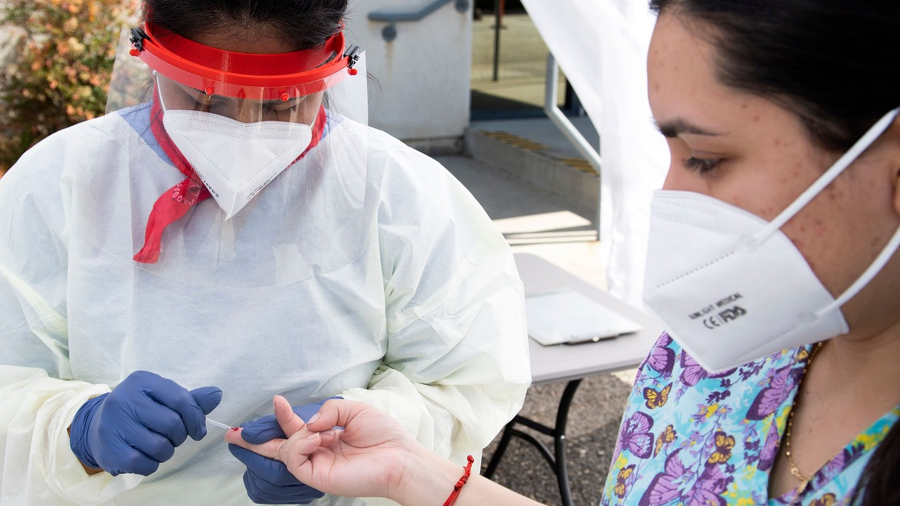
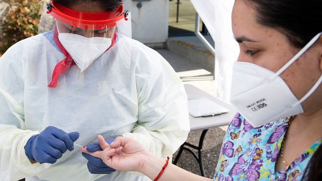

Blood type and genetics may determine your odds of contracting the coronavirus, study finds
Factors such as age and underlying health conditions such as diabetes can put you at a higher risk of contracting coronavirus, according to the U.S. Centers for Disease Control and Prevention.But one more factor that could affect your chances of getting coronavirus is your blood type, at least according to one recent study.
People who have blood Type A were 'associated with' a 45% 'higher risk of acquiring COVID-19' compared to people with other blood types, according to a study published Wednesday in the peer-reviewed New England Journal of Medicine by a team of European scientists.Meanwhile, people with blood Type O, the most common blood type, less likely to get coronavirus as people with other blood types.
Don’t miss: Here are 9 hand sanitizers that the FDA warns can be toxic if absorbed by the body
The researchers arrived at this result after performing genetic analysis on more than 1,900 severely ill coronavirus patients in Spain and Italy and comparing them with over 2,000 patients who were not sick.
Also see: Here’s a look at who is most at risk of contracting COVID-19 and how much they earn for taking that risk
A commonality they found was a DNA cluster which determines blood types, among other components within the human body.This prompted further research into which specific blood types were present in the majority of the severe cases of coronavirus they looked at.
Because the DNA cluster is found in other parts of the body, it may not be the case that blood type can predict one’s risk of contracting coronavirus, said Roy Silverstein, a hematologist who is the chairman of the department of medicine at the Medical College of Wisconsin.
‘Those who are not Type A should not interpret this study to mean that they can let their guard down.Similarly, the data are not yet convincing enough to recommend that those with Type A need to do even more than what is recommended.’
— Roy Silverstein, Medical College of Wisconsin
'Those who are not type A should not interpret this study to mean that they can let their guard down,' Silverstein, former president the American Society of Hematology, said.'Similarly, the data are not yet convincing enough to recommend that those with Type A need to do even more than what is recommended.'
'Everyone needs to pay attention to COVID-19 prevention by following well-accepted guidelines related to social distancing, face covering, hand-washing, and self-isolation and testing in the setting of possible COVID-related symptoms.'
A prior study published by the Southern University of Science and Technology in China, which has not been peer-reviewed, and a study by 23andMe, a privately held genetic-analysis company, pointed to similar results.
But even still, Silverstein urged people to take these findings 'with a grain of salt.'
'This study, along with other studies from China and from 23andMe all suggest, but do not prove, a statistical association between non-O blood type with either risk of infection with the COVID-19 virus, or with risk of developing severe disease if infected.'
But the studies, he said, should prompt 'more rigorous clinical studies as well as basic science studies to probe the mechanisms by which ABO blood type and or ABO genes might influence coronavirus ability to infect cells or the body’s immune response to the virus.'
Posted On: 2020-06-29T15:26:00
Posted By: Elisabeth Buchwald


Content Date: 2020-06-29
Download Date: 2021-04-08
Document ID: L0C049MNJ